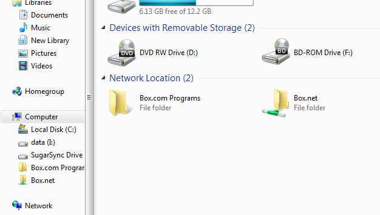
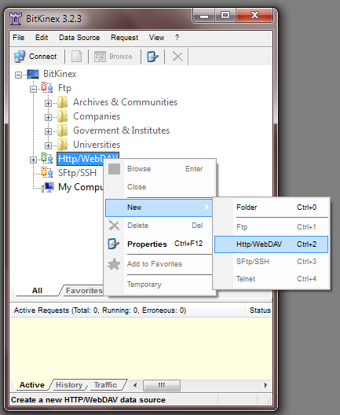

Box: WebDAV access
To access to syncing servicies via WebDAV, and see them in a file manager without installing the client -> wait to load -> index -> do the sync dance just to get one file1, it's priceless2.
I decided to do this because I wanted to do something that needed a FTP. Lately (or always was like that), you can't create a FTP account only, you must create a web site first. Not interested. I don't have a server/computer (proyect pending) acting as a server and install FileZilla. Damnit. I remembered the sync servicies that I have an account with and jumped into using them.
I chose Box. I thought into uploading the files via the web interface, given that the synchronization is a bit bad, but I realized that SugarSync has the "SugarSync Drive" feature, that allows you to access your file through a file manager. I started to search if Box had something similar.
It has FTP access but only for paid accounts. Then I read about WebDAV. Tried to configurate it and, after struggling for minutes, here is how to do it in Windows (7)
Windows Explorer
In "Computer" (the old "My PC"), go to Map network drive

Select the drive (doesn't matter apparently), check Reconnect at logon. Click on Connect to a Web site that you use to store...
In the new popup window, select Choose a custom network location
Now the fun part that gave me headaches: the address.
You can input:
- For the whole folder/account:
https://dav.box.com - For specific folder:
https://dav.box.com/dav/FOLDER
New popup window for log in. Enter the Box user/e-mail and password.
Optional, in the next window rename the folder:
And here is the hardwork done:

If this doesn't work for you, you can use CarotDAV (to view al the servicies in one portable program), the famous Total Commander or BitKinex.
BitKinex
Download BitKinex. Install normally, but I recommend (because I read somewhere) uncheck the "I want to configure data source now" option (apparently does nothing)
Once initiated (yes, it looks very small for some reason), look for Http/WebDAV, right click > New > Http/WebDAV and enter a name.

The address is similar to above: dav.box.com, select SSL. Enter user and password:

I also read (optional) that you can include a path in the Site map (don't know why, didn't noticed a difference). You configurate it going to Site Map (under where you're now/Server) and adding/modifyng the path with /dav, picking Directory WebDAV-compliant

And done, you just doble click it to connect:

Source: Box zendesk